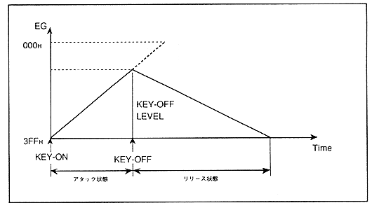

However, in all cases of the sounding state, the EG does not transition between the four states, and draws various envelope curves depending on the KEY_OFF timing. An example is described below.
(a) When KEY_OFF is performed during the attack state transition (Figure 4.12)
Figure 4.12 KEY_OFF during attack state transition

When KEY-OFF is performed, attenuation (increased as the value of EG) will be performed from the current level (KEY_OFF LEVEL) according to the set value of the release rate ("RR"). Therefore, the envelope curve in this case looks like the decay 1 state and decay 2 state are missing. In this case, the EG value does not reach "000H" and increases to "3FFH" at the KEY_OFF boundary.